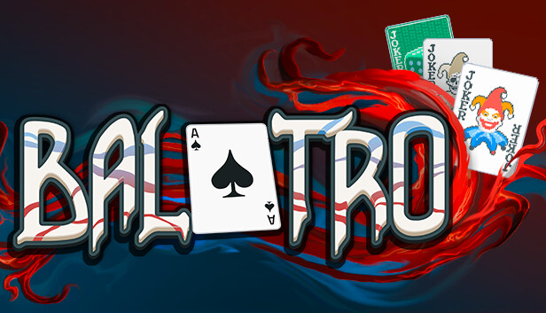
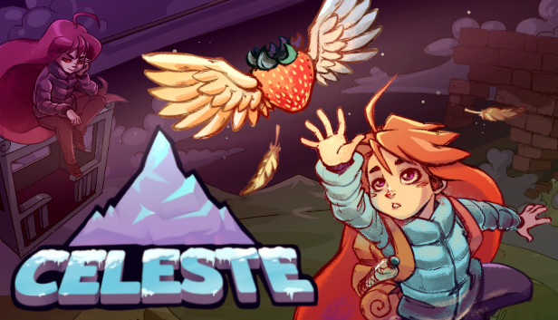
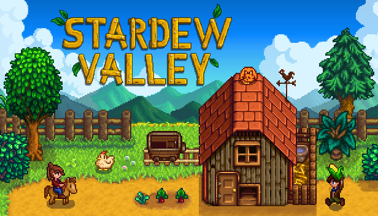

Jogos indie são feitos por estúdios pequenos (às vezes por uma pessoa só!). Separei alguns que eu gosto muito.
Balatro

Imagem: divulgação/Steam
Estúdio: LocalThunk | Ano: 2024 | Gênero: Roguelike de cartas
É um jogo de cartas que usa as mãos do poker, mas com coringas que mudam as regras e deixam a pontuação absurda. Cada partida é diferente.
Por que vale a pena: as partidas são rápidas e viciam muito. Não precisa saber jogar poker.
Celeste

Imagem: divulgação/Steam
Estúdio: Maddy Makes Games | Ano: 2018 | Gênero: Plataforma
Você controla a Madeline tentando subir uma montanha. Os pulos são bem difíceis, mas o jogo também conta uma história bonita sobre ansiedade.
Por que vale a pena: é difícil, mas justo, e tem um modo de assistência para quem quiser jogar mais tranquilo.
Stardew Valley

Imagem: divulgação/Steam
Estúdio: ConcernedApe | Ano: 2016 | Gênero: Simulação de fazenda
Você ganha uma fazenda do avô e vai morar numa cidadezinha. Dá para plantar, pescar, minerar, fazer amizade e até casar. Foi feito por uma pessoa só!
Por que vale a pena: é super relaxante e dá para jogar com os amigos no modo cooperativo.